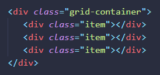
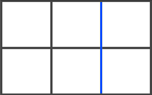
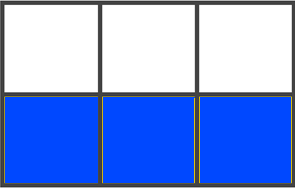
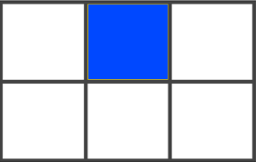
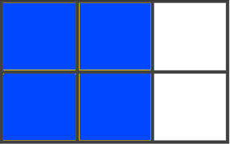
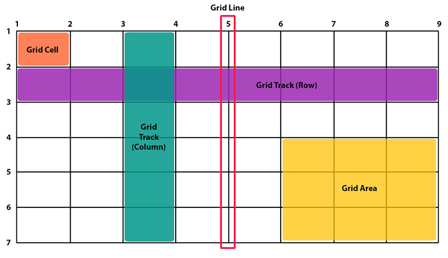
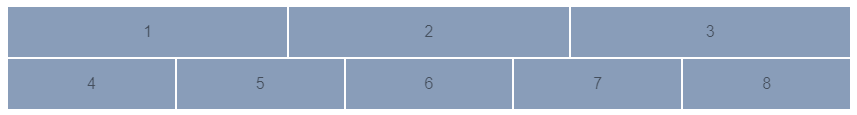
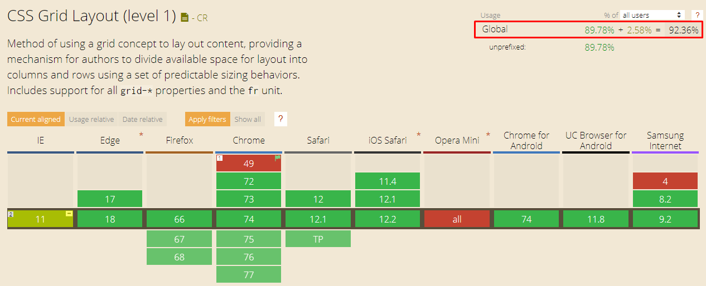

CSS Grid Layout - самая мощная система компоновки из доступных на данный момент в CSS. Это двумерная система, которая может обрабатывать как столбцы так и строки, в отличии от Flexbox, который в значительной степени является одномерной системой. При работе с CSS Grid, вы применяете CSS правила к родительским элементам (которые становятся Grid контейнерами) и к дочерним элементам (которые становятся Grid элементами).
Контейнер сетки
Элемент к которому применяется display: grid. Это прямой родитель для всех элементов сетки. В этом примере grid-container является контейнером.
Элемент сетки
Дочерние элементы (прямы потомки) контейнера. На примере выше item это элемент сетки.
Линия сетки (Grid Line)
Разделительные линии, составляющие структуру для сетки. Они могут быть вертикальными (линии колонок) или горизонтальными (линии строк) и располагаться по обе стороны от строки или столбца. На изображении синяя линия является примером вертикальной линии (линией колонки).
Трек сетки (Grid Track)
Пространство между двумя соседними линиями. Трек можно представить как строку (колонка) или столбец (ряд). Вот трек между второй и третей линией строк.
Ячейка сетки (Grid Cell)
Пространство между линиями двух соседних строк и двух соседних столбцов. Это отдельная единица измерения сетки. Вот пример ячейки между линиями строк 1 и 2, линиями колонок 2 и 3.
Область сетки (Grid Area)
Общее пространство окружённое четырьмя линиями. Область может состоять из любого количества ячеек. Вот пример области между строками 1 и 3 и колонками 1 и 3.
Как устроен grid контейнер

В отличие от Flex, которая ориентирована на одну ось, Grid оптимизирована для двумерных компоновок: когда требуется расположить (выровнять) содержимое в обоих измерениях (по вертикали и горизонтали).
Кроме того, благодаря возможности явного позиционирования элементов в сетке, Grid позволяет выполнять кардинальные преобразования в структуре, не требуя никаких изменений HTML разметки. Комбинируя медиа-запросы со свойствами CSS, управляющими компоновкой контейнера grid и его дочерних элементов, можно адаптировать верстку под любые форм-факторы устройств.
Grid и Flexbox, имеют свои особенности и нельзя сказать, что одно заменяет другое. Скорее Флекс является дополнением к Грид, или наоборот.
Flexbox фокусируется на распределении пространства внутри одной оси, использует более простой подход к компоновке, может использовать систему упаковки строк на основе размера содержимого для управления своей вторичной осью и полагается на иерархию разметки. Тогда как Grid больше подходит для создания каркасов, потому что имеет более мощный и комплексный подход и в целом не зависит от иерархии разметки. В отдельных случаях Grid позволяет создать адаптивный макет, который невозможно создать с помощью Flex или как-то еще.
Flexbox - ориентируется по одной оси

CSS Grid - ориентируется по двум осям
В данный момент почти все современные браузеры поддерживают Grid CSS без необходимости указывать дополнительные префиксы и покрывают 92% всех устройств. Посмотреть на сайте Can I use 
Опеределяет элемент как контейнер и устанавливает новый контекст форматирования сетки для его содержимого.
Значения:
grid-template-columns
grid-template-rows
Опеределяет колонки и строки сетки с помощью списка значений разделённого пробелами. Значения представляют из себя размер трека, а пробелы между ними линии сетки.
Значения:
Опеределяет шаблон сетки ссылаяся на имена областей, которые заданы с помощью свойства grid-area. Повторение названия области приводит к тому, что содержиоме охватывает эти ячейки. Точка означает пустую ячейку. Сам синтаксис предоставляет визуализацию структуры сетки.
Значения:
Сокращение для grid-template-rows, grid-template-columns и grid-template-area.
Значения:
/*
100px - высота первой строки
500px - высота второй строки
1fr 1fr 1fr - ширина столбцов
*/
grid-column-gap
grid-row-gap
grid-gap
Опеределяет размер ширины линии между строками, между столбцами или для двух параметров одновременно.
Значения:
grid-auto-columns
grid-auto-rows
Определяет размер строк или столбцов по умолчанию. Работает если не указаны свойства grid-template-rows и grid-template-columns соответственно, а так же для треков созданных автоматически.
Значения:
Если у вас есть элементы, которые вы явно не позиционируете в сетке, запускается алгоритм авто размещения, чтобы их автоматически разместить. Это свойство контролирует то как алгоритм авто-размещения работает.
Значения:
Сокращение для настройки всех следующих свойств: grid-template-rows, grid-template-columns, grid-template-area, grid-auto-rows, grid-auto-columns, grid-auto-flow. Он так же настраивает grid-column-gap и grid-row-gap на их начальные значения, даже если они не могут быть явно заданы этим свойством.
Значения:
justify-items (1)
align-items (2)
place-items
Выравнивает элементы внутри ячеек.
(1) Выравнивает элементы вдоль оси строки (по горизонтали).
(2) Выравнивает элементы вдоль оси столбца (по вертикали).
Значения:
justify-content (1)
align-content (2)
place-content
Выравнивает сетку внутри контейнера.
(1) Выравнивает элементы по горизонтали.
(2) Выравнивает элементы по вертикали.
Значения:
Примеры:
5. Свойства для дочерних элементов
Даёт название элементу чтобы можно было ссылаться на него с помощью шаблона созданного через свойство grid-template-areas. В качестве альтернативы, это свойство может быть использовано в качестве сокращения для grid-row-start + grid-column-start + grid-row-end + grid-column-end
Значения:
grid-column-start
grid-column-end
grid-row-start
grid-row-end
Определяют местоположение в сетке ссылаясь на конкретные линии. grid-column-start / grid-row-start - это линия с которой начинается элемент, а grid-column-end / grid-row-end - это линия на которой элемент заканчивается.
Значения:
Сокращения для grid-column-start + grid-column-end и grid-row-start + grid-row-end соответственно.
Значения:
justify-self
align-self
place-self
justify-self - Выравнивает содержимое элемента вдоль оси строки. align-self - Выравнивает содержимое элемента вдоль оси столбца. place-self - Выравнивает текущий элемент внутри ячейки по двум осям сразу. Эти значение применяются к содержимому внутри отдельного элемента.
Значения: